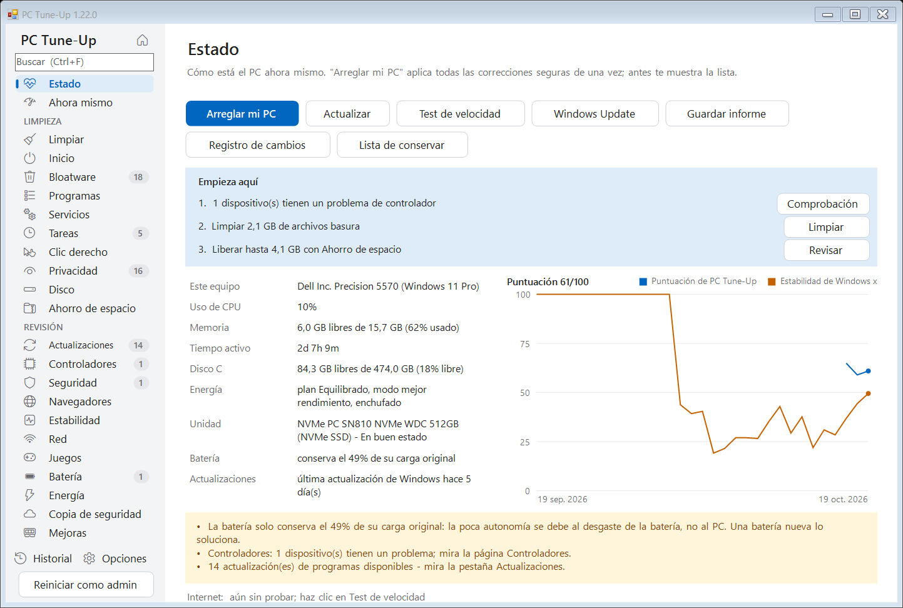
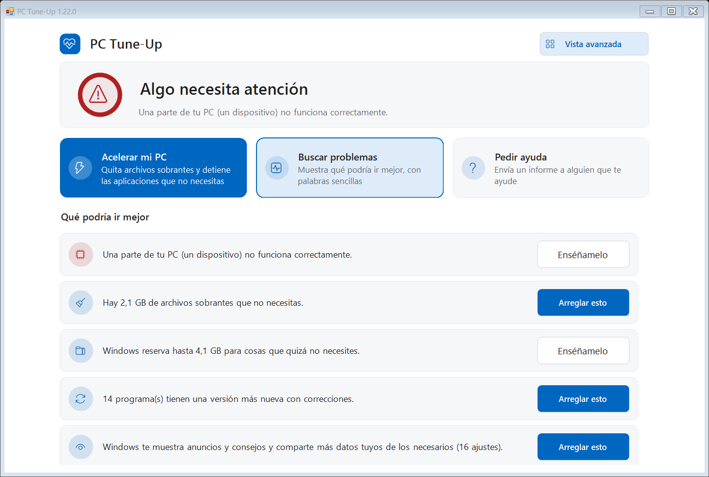
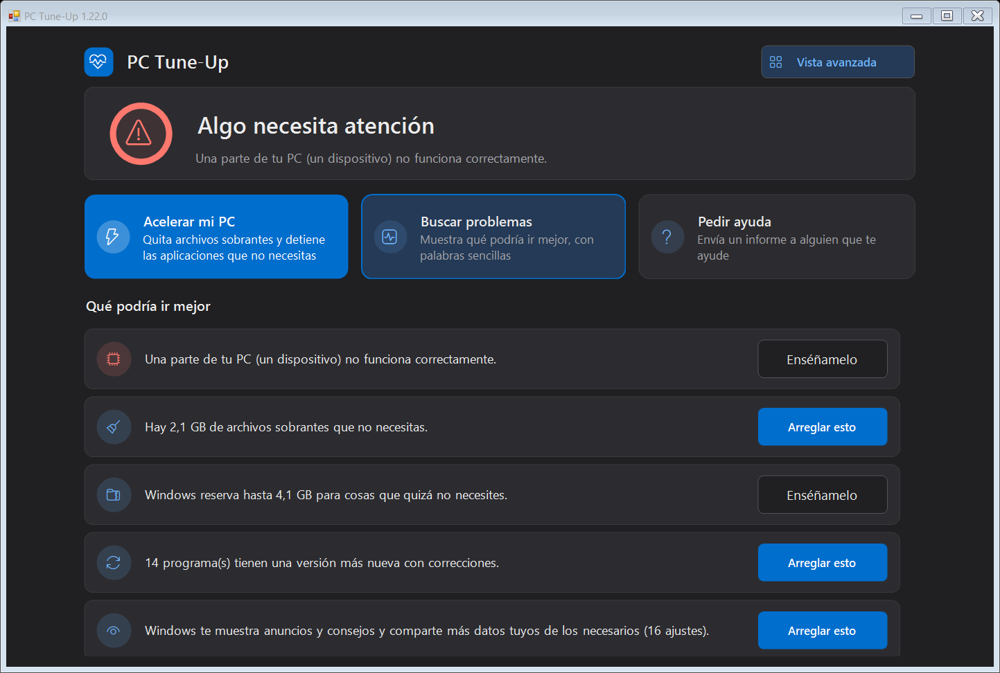
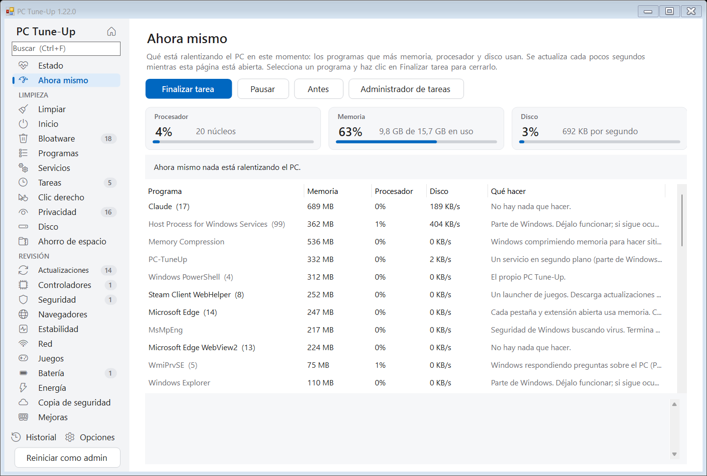
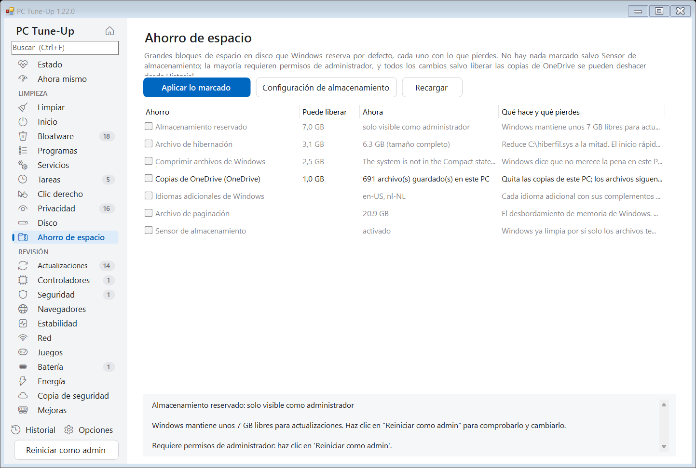
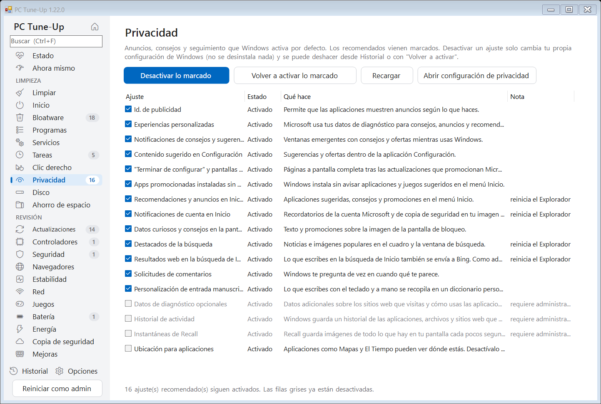
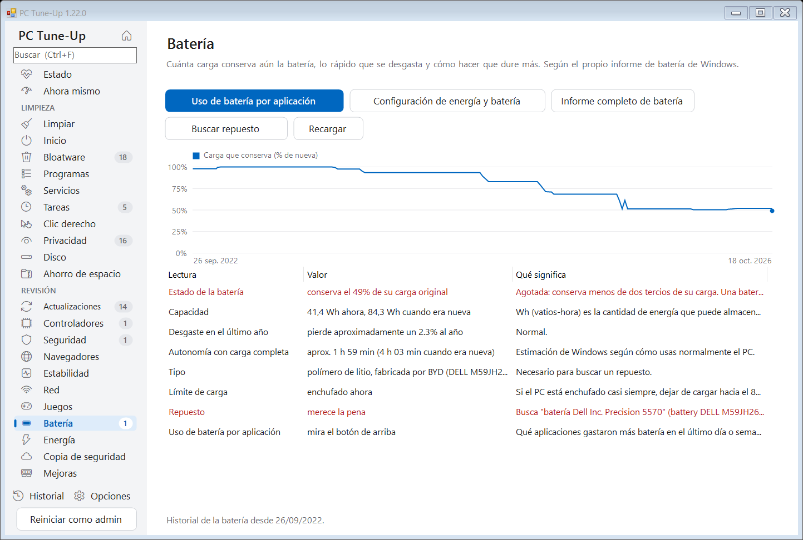
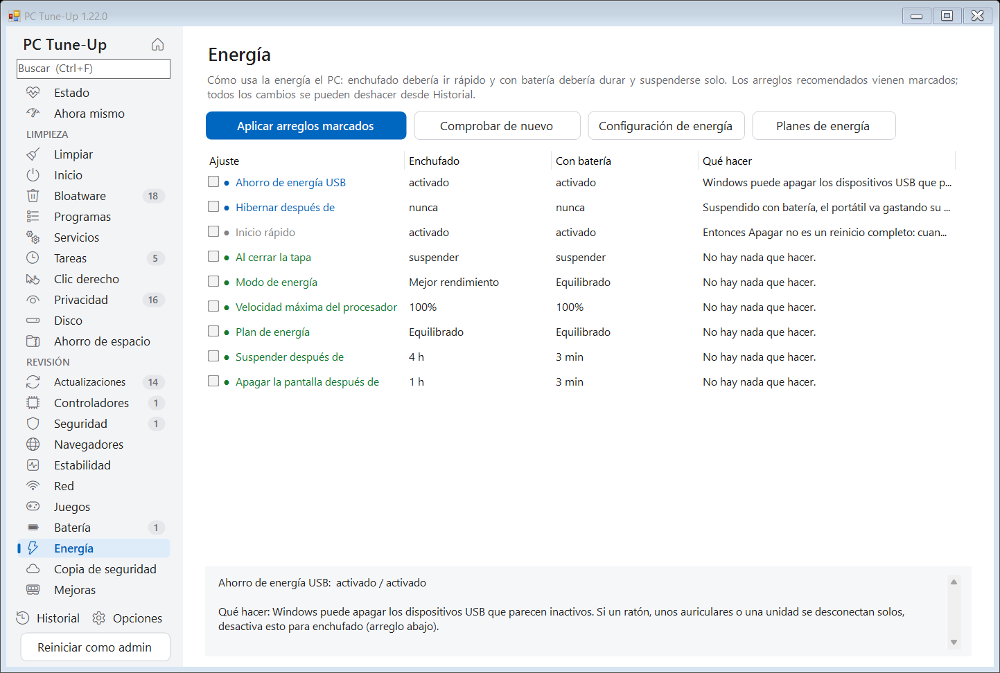
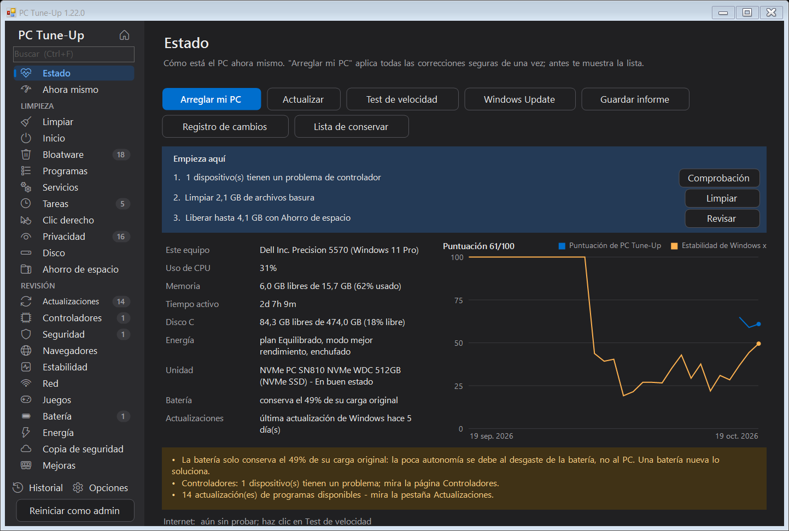

Revisa, limpia y acelera cualquier PC con Windows.
PC Tune-Up encuentra lo que ralentiza tu PC, te lo explica con palabras sencillas y lo arregla con un clic. Y cada cambio se puede deshacer.
Gratis y de código abierto (MIT). Windows 10 y 11. En español, inglés, neerlandés, alemán, francés, italiano y polaco. Sin cuenta y sin anuncios.

Todo en un solo lugar
Lo que revisaría un técnico de PC, en 25 páginas en las que puedes buscar con Ctrl+F, y un recuadro "Empieza aquí" que te dice cuáles son las tres cosas más importantes ahora mismo.
Archivos basura y espacio
Archivos temporales, volcados de bloqueo, cachés del navegador y restos de Windows. Archivos grandes y duplicados. Ahorro de espacio, como el archivo de hibernación y las copias de OneDrive.
Inicio y bloatware
Apps que se inician con Windows, basura preinstalada de cualquier fabricante, programas que no usas, servicios en segundo plano y tareas programadas.
Privacidad y menús
Anuncios, consejos y seguimiento de Windows desactivados uno a uno. Entradas sobrantes del menú del clic derecho, ocultas.
Ahora mismo
Qué está ralentizando el PC en este preciso momento: procesador, memoria y disco, los programas que los usan explicados con palabras sencillas, y Finalizar tarea para cerrar uno. Además, lo llena que ha estado la memoria en los últimos 7 días.
Actualizaciones y controladores
Programas desactualizados que se actualizan con winget, dispositivos con problemas de controladores y la antigüedad de los controladores importantes.
Seguridad y navegadores
Soporte de Windows, antivirus, firewall, cifrado, Secure Boot, y también extensiones del navegador, configuraciones forzadas, archivo hosts y trucos de proxy que parecen adware.
Bloqueos y estabilidad
Bloqueos, cuelgues y pantallas azules de los últimos 30 días, agrupados según su causa real, con soluciones de un clic.
Red y juegos
Señal wifi, retrasos, velocidad de DNS y cortes. Qué tarjeta gráfica usa de verdad tu juego y qué más lo está frenando.
Batería y energía
Lo desgastada que está la batería y dónde esconde el fabricante de tu PC el límite de carga del 80%. Modo de energía, suspensión, pantalla y tapa: rápido cuando está enchufado, duradero con batería.
Copia de seguridad y mejoras
Si tus archivos sobrevivirían a un PC averiado o robado. Qué mejoras de memoria, disco y batería encajan en este PC concreto, y si merecen la pena.
Cuidadoso por diseño
Un programa para poner a punto tu PC nunca debería empeorar las cosas.
- ✓Cada cambio aparece en la página Historial, y casi todos se pueden deshacer con un clic.
- ✓Primero te pregunta y te muestra exactamente lo que va a hacer. Nada importante viene marcado de antemano.
- ✓Una vista simple para quien no quiere ver los detalles: una sola pantalla tranquila, un estado con palabras sencillas, tres botones grandes y solo arreglos seguros, además de un botón para enviar un informe al familiar que suele echarte una mano. Un clic en Vista avanzada muestra todas las herramientas.
- ✓Nunca toca el software de seguridad, las VPN, los controladores ni las bases de datos, y puedes añadir tus propios programas a una lista de conservar.
- ✓Como administrador, crea un punto de restauración de Windows antes de los cambios más grandes.
- ✓El mantenimiento semanal opcional limpia la basura por sí solo y solo te avisa cuando aparece algo nuevo.
- ✓Cuando Arreglar mi PC termina, te muestra qué ha cambiado (espacio libre, apps que se inician con Windows, la puntuación): antes y después.
- ✓Recordatorios de cosas que llevan demasiado tiempo esperando (un reinicio que Windows está esperando, actualizaciones pendientes, una limpieza de hace mucho), cada uno con un botón Más tarde.
- ✓Cada versión nueva se prueba automáticamente en un PC con Windows recién instalado, en los siete idiomas.
Capturas de pantalla
Claro y oscuro, según tu configuración de Windows.








Instalar
- Descarga PC-TuneUp.exe y ábrelo. Te ofrece instalarse por sí solo (sin permisos de administrador) y se mantiene actualizado.
- La primera vez, Windows puede decir "Windows protegió su PC", porque el programa todavía no tiene firma digital. Haz clic en Más información > Ejecutar de todas formas.
- Se abre en la vista simple: haz clic en Acelerar mi PC o arregla los puntos de la lista uno a uno. Para ver todas las herramientas, haz clic en Vista avanzada y empieza con Arreglar mi PC en la página Estado. Usa Reiniciar como admin para incluir también los archivos y la configuración propios de Windows.
Pronto también en winget: winget install MichaelKloprogge.PCTuneUp
Para IT y scripts
PC-TuneUp.exe /report[:archivo.html] revisarlo todo y guardar un informe PC-TuneUp.exe /fix ejecutar los pasos seguros de Arreglar mi PC sin preguntar PC-TuneUp.exe /auto el mantenimiento automático (limpiar, revisar, avisar) PC-TuneUp.exe /install | /uninstall instalar o quitar para el usuario actual
Política de firma de código
Cada versión la compila GitHub Actions a partir del código fuente público y solo se publica desde allí. Colaboradores y revisores: Michael Kloprogge (propietario del proyecto). Aprobador de cada versión firmada: Michael Kloprogge.
Privacidad: PC Tune-Up no envía ninguna información sobre tu PC a otros sistemas. Las únicas conexiones de red son la comprobación de actualizaciones (GitHub), la prueba de velocidad que inicias tú (Cloudflare) y la lista de programas de winget; consulta Privacidad más abajo.
Privacidad
Todo se ejecuta en tu propio PC. PC Tune-Up no tiene cuenta, ni seguimiento, ni analíticas, y no se envía nada sobre tu PC a ningún sitio. Solo usa internet para buscar actualizaciones (GitHub), para la prueba de velocidad opcional (Cloudflare) y para la lista de programas de winget.
Todo el código fuente está en GitHub, así que cualquiera puede comprobar lo que hace.